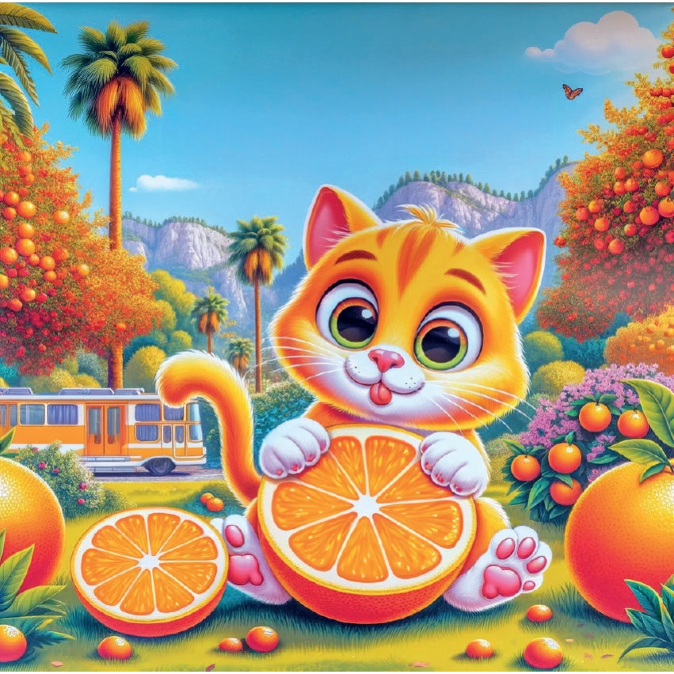
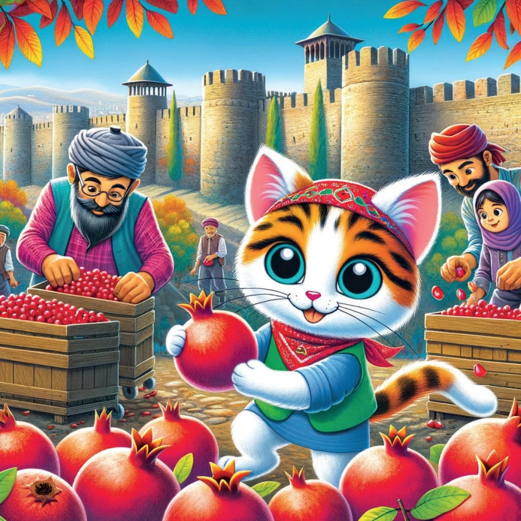

1

2

3
Il était une fois un petit chat curieux nommé Karamel qui adorait découvrir les différentes saisons. Un jour, elle décida de voyager à travers la Turquie pour découvrir la beauté et le charme de l'automne.
4
5
Marmara Bölgesi - İstanbul : Le Bosphore en Automne.
Le premier arrêt de Karamel fut İstanbul, où elle admira les magnifiques couleurs d'automne le long du Bosphore. Les feuilles dorées et l'air frais faisaient que la ville avait l'air magique.
6
7
Région Aegean - İzmir: La Récolte des Olives.
Ensuite, Karamel est partie à İzmir pour aider à la récolte des olives. Elle adorait cueillir les olives et apprendre comment elles se transforment en délicieuse huile d'olive.
8
9
Méditerranée - Antalya : Agrumes d'Automne.
À Antalya, Karamel a découvert l'abondance des agrumes d'automne. Elle a apprécié les oranges et les citrons frais et juteux, un régal délicieux par ce temps doux d'automne.
10

11
Central Anatolia - Ankara : Marchés d'Automne Chaleureux.
Karamel est partie à Ankara et a découvert les marchés d'automne chaleureux. Elle y a trouvé de délicieux produits de saison et des objets faits à la main qui rendent cette période de l'année spéciale.
12
13
Région Noire – Trabzon : Jardins de Thé en Automne.
À Trabzon, Karamel est allé visiter les jardins de thé et a apprécié l'atmosphère paisible de l'automne. Les feuilles de thé, avec les couleurs vives des arbres autour, étaient vraiment belles à voir.
14
15
Southeastern Anatolia - Diyarbakır: Récolte des Grenades.
Karamel, notre amie, est arrivée à Diyarbakır pour aider à récolter les grenades ! Les grenades rouges étaient magnifiques et très bonnes. Elles ont apporté beaucoup de couleurs à la campagne d'automne.
16

17
Automne à Erzurum : Les Fêtes d'Automne.
À Erzurum, dans l'Est de la Turquie, Karamel a vécu la joie des fêtes d'automne. Elle a adoré écouter de la musique traditionnelle et voir des danses. L'ambiance était festive et pleine de joie pour célébrer cette saison.
18
19
Avec son cœur rempli de charme d'automne et de nouvelles expériences, Karamel réalisa que chaque région de Türkiye avait sa propre beauté unique en automne. Elle rentra chez elle, rêvant de sa prochaine aventure saisonnière.
20
21
22